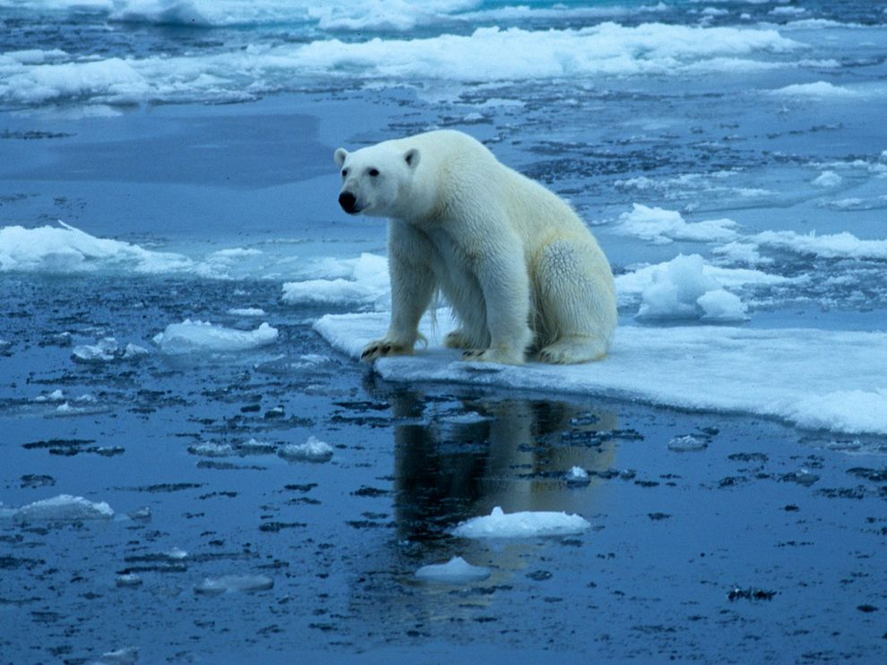

eco-friendlyHealthy
Earth
We're dedicated to empowering people to become advocates for all animals, working to create a world where every being is safe, cherished, and free from harm.
Our planet
Our Environment
and
Our animals


HUMAN IMPACTS ON THE ENVIRONMENT
overpopulation, pollution, burning fossil fuels, and deforestation.
It's almost unthinkable that we would not know this number or at least have a good estimate. But the truth is that it's a question that continues to escape the world's taxonomists.
An important distinction is how many species we have identified and described and how many species there actually are. We've only identified a small fraction of the world's species, so these numbers are very different.
Air pollution refers to the release of pollutants into the air—pollutants that are detrimental to human health and the planet as a whole.
According to the World Health Organization (WHO), each year, indoor and outdoor air pollution is responsible for nearly seven million deaths around the globe.

into subsurface groundwater or into lakes, streams, rivers, estuaries,
and oceans to the point that the substances interfere with beneficial use of the water or with the natural functioning of ecosystems.
We all must realize how important soil is to us. This will help
us cab the soil pollution problemin a better way

Hunting, sport that involves the seeking, pursuing, and killing of wild animals and birds,
called game and game birds, primarily in modern times with firearms but also with bow and arrow.
Watch Showreel
THE OUR
STRUGGLE TO
SAVE ANIMALS
IUCN Red List
The IUCN Red List tracks the number of described species and updates this figure annually based on the latest work of taxonomists. In 2022, it listed 2.16 million species on the planet. In the chart, we see the breakdown across a range of taxonomic groups - 1.05 million insects, over 11,000 birds, over 11,000 reptiles, and over 6,000 mammals.
RESULT
To combat the climate crisis and secure a safe future below 1.5°C, the world needs to cut emissions of planet-warming greenhouse gasses by 50 per cent within the decade.
For many, ambitious targets such as this can induce a sense of dread and paralysis. But experts say there is a lot we can do as individuals to counter climate change.
Research shows that lifestyle changes could help the planet slash emissions by up to 70 per cent by 2050.
We sat down with Garrette Clark, an expert in sustainable living with the United Nations Environment Programme (UNEP), to learn more about what people and policymakers can do to make sustainable choices to help secure a healthier planet.
How many species have we described?
Animal welfare isn't just about protecting animals; it's about safeguarding our future. Cruelty towards animals breeds violence and disharmony, harming not only them but also our communities, health, economy, and planet. By prioritizing animal welfare, we build a more compassionate and sustainable world for all.

Our Nature lifestyle
The Earth's magnificent tropical rainforests represent a treasure trove of biological heritage. They not only retain many primitive plant and animal species with incredible and ancient evolutionary lineages but are also communities that exhibit unparalleled biodiversity and a great variety of ecological interactions. The tropical rainforests of Africa, for example, were the habitat in which the ancestors of humans evolved and are where our nearest surviving relatives—chimpanzees and gorillas—live still.
Because European explorers initially travelled through tropical forests largely by river, the dense tangled vegetation lining the stream banks gave a misleading impression that such jungle conditions existed throughout the entire forest. As a result, it was wrongly assumed that the entire forest was impenetrable jungle.
RESPECT WILDLIFE
Stop Hunting
Save Fish
Stop eating animals
respect animals
These trees are more beneficial in our environment
Oak
Oak trees give the shade of cool the ground and create blocks of wind that filter by its branches and foliage and assist to stabilize soil with its root system. Besides, this tree is a good accommodation for the birds and animals as this tree is relatively larger than other trees.
Neem:
Neem produces oxygen like other trees; however, it has some amazing benefits. Neem reduces soil erosion, control flood, and it is a windbreaker which helps us to protect heavy storms. Moreover, neem produces natural pesticide that is useful for other crops and lands.
Tulshi:
As we know tulshi is an ayurvedic tree, but it has environmental benefits also. Tulshi has an anti-corrosion feature that protects the environment from chemical and industrial pollutants. It has anti-bacterial and anti-inflammatory ingredients which combat different kinds of pollution.
Bamboo:
One of the most eco-friendly trees is bamboo which has lots of benefits for our environment. It can eliminate up to 35% more carbon dioxide than other trees from the environment, and it has strong roots in the grounds, which makes the soil fixed.
Why Are Wildlife Closures Important?
See All Case Studies
See All Case Studies
The same “winter-wonderland” conditions which make Jackson Hole a mecca for winter recreation can prove challenging for our valley’s wildlife. While Jackson’s wildlife is adapted to our mountainous climate, deep snowpack and lack of available food still make surviving winter a constant challenge for many species. Unintentional human disturbance, such as backcountry skiing, snowmobiling, or even off-leashed dogs in critical wintering areas can increase stress at a critical time of year and force animals to burn precious calories needed for survival.
Seasonal wildlife closures zones in Bridger-Teton National Forest and in Grand Teton National Park address this issue by helping to provide safe havens of critical habitat for species, such as elk, mule deer, and bighorn sheep. The Jackson Hole region provides boundless front and back country recreational opportunities. Being Wild Jackson Hole kindly reminds visitors that part of “knowing before you go” is understanding where these limited closures exist. Respecting wildlife winter closures is one important step to take to ensure our cherished wildlife can conserve enough energy to survive until spring.